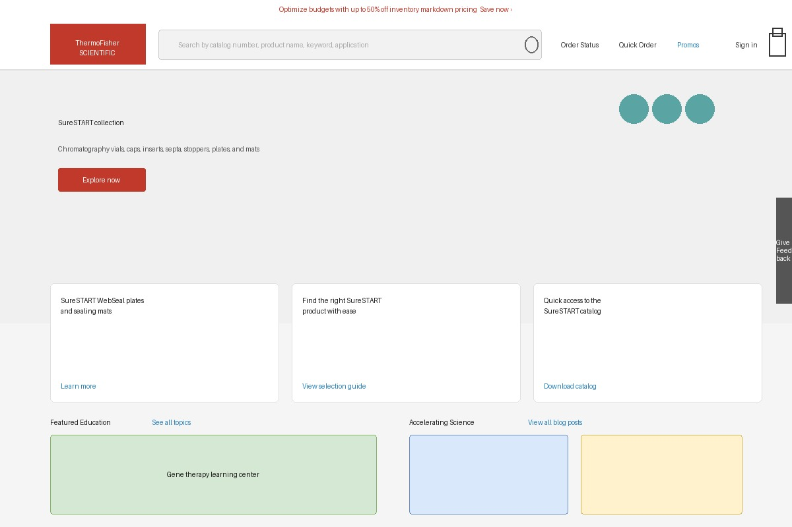
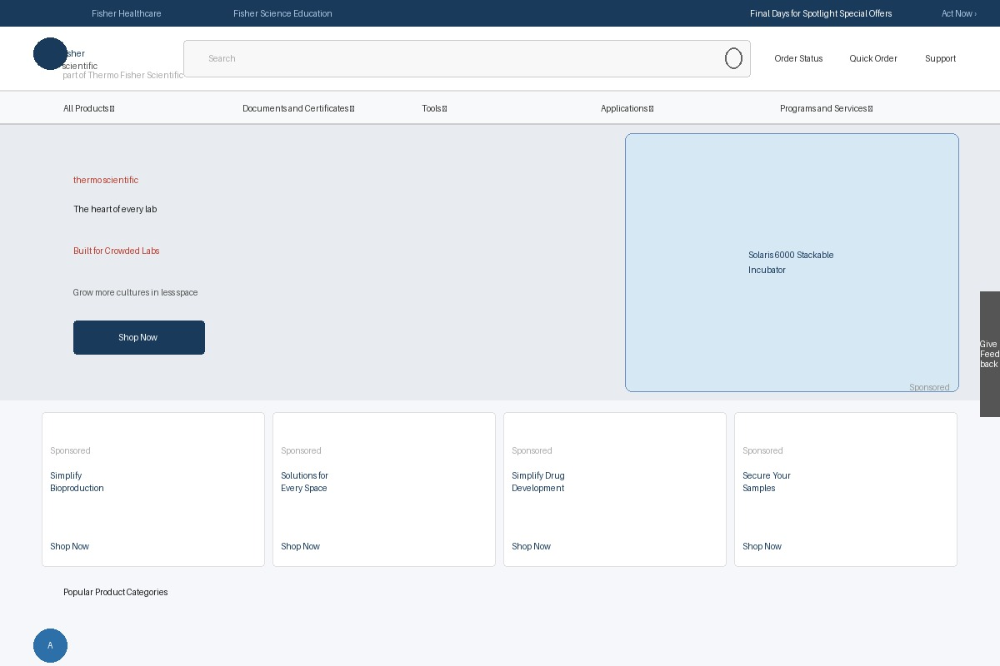

From identifying an organizational gap to founding a team, architecting an AEM component library, and driving 100% adoption across the enterprise.
Live on production today


ThermoFisher Scientific operates at massive scale — hundreds of internal development teams, external agencies, and multiple customer-facing brands all building digital products independently. The result was visible: inconsistent UI quality, fragmented UX patterns, and no shared vocabulary between design and engineering.
Different teams had built their own component solutions in different languages and tech stacks. There was no single source of truth for how a button, a search bar, or a product card should look, behave, or be built. Every new feature started from scratch.
"I saw a gap in the UI quality and the UX designs — and rather than report it, I built the team to fix it."
This project didn't begin with a mandate — it began with a gap I identified and a proposal I made. I created the UX/UI Engineering function at ThermoFisher from scratch: defined the charter, built the team, and established the practice that bridges design and engineering at enterprise scale.
The system covers both core AEM components and a layer of custom components tailored to ThermoFisher's product and content needs. Every component was designed in Figma, architecturally specified, and hand-coded — giving both design teams and development teams a single reference point.
The library covers the full surface of customer-facing experiences: navigation systems, search, hero units, product cards, editorial layouts, promotional banners, forms, and more. Critically, the system was built to be platform-agnostic — distributed via CDN so teams using different tech stacks could consume the same components without rebuilding them.
900 internal teams means 900 different opinions. Development managers and directors had existing workflows, existing component solutions, and existing tech stacks. Getting alignment required more than a good component library — it required a compelling case for change and a frictionless path to adoption.
Mapped the existing UI landscape across ThermoFisher's customer-facing properties. Documented inconsistencies, redundant components, and places where UX quality fell short of brand standards.
Built the component library in Figma and AEM in parallel — establishing design tokens, component props, and variant structures that could support multiple brands (thermofisher.com, fishersci.com) from the same underlying system.
Ran sessions with development managers and directors across business units. The core objection: "we'd have to maintain two component libraries." The answer was a CDN-delivered system — teams consume components without maintaining them, regardless of their tech stack.
Created standard operating procedures for each team type: how to request new components, how to report issues, how to consume updates without breaking existing implementations. The SOPs turned adoption from a one-time event into a sustainable practice.
Worked hands-on with teams across all platforms during migration — helping implement components, resolving integration issues, and iterating the system based on real-world feedback from the teams consuming it.
Every internal team with a customer-facing product adopted the system. External agencies were brought onto the same components via CDN, maintaining brand and UX standards even outside the org. The system runs on two of the largest life sciences e-commerce platforms in the world.
Beyond the numbers: the system changed how ThermoFisher thinks about design and engineering. By creating the UX/UI Engineering function, I helped establish a practice that lives at the intersection of craft and code — and gave hundreds of teams a shared language they didn't have before.